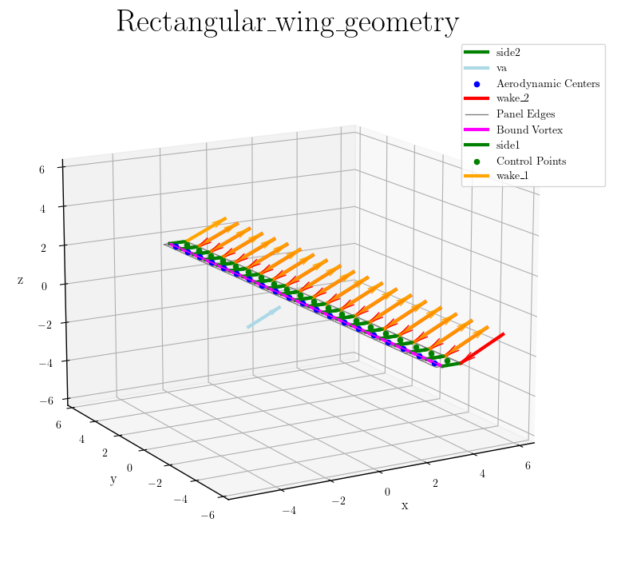

Rectangular Wing
Wing Aerodynamics Analysis using Vortex-Step Method (VSM) and Lift Line Theory (LLT)
This example demonstrates the process of setting up and analyzing a wing's aerodynamics using VSM and LLT. We'll cover the following steps:
- Importing necessary libraries.
- Define the wing parameters
- Create wing geometry with linear panel distribution and add the wing sections
- Initializing the wing aerodynamics and set the inflow conditions.
- Plotting the geometry
- Initialize solvers for both LLT and VSM methods
- Running an simulation with both methods
- Plotting distributions
- Plotting polars
First, install Julia and launch the Julia REPL as explained in the section Installation. Then, copy and paste to the Julia prompt:
Step 1: Importing the necessary libraries:
using LinearAlgebra
using ControlPlots
using VortexStepMethodStep 2: Define wing parameters
n_panels = 20 # Number of panels
span = 20.0 # Wing span [m]
chord = 1.0 # Chord length [m]
v_a = 20.0 # Magnitude of inflow velocity [m/s]
density = 1.225 # Air density [kg/m³]
alpha_deg = 30.0 # Angle of attack [degrees]
alpha = deg2rad(alpha_deg)Step 3: Create wing geometry with linear panel distribution
wing = Wing(n_panels, spanwise_panel_distribution=LINEAR)Add wing sections - defining only tip sections with inviscid airfoil model
add_section!(wing,
[0.0, span/2, 0.0], # Left tip LE
[chord, span/2, 0.0], # Left tip TE
INVISCID)
add_section!(wing,
[0.0, -span/2, 0.0], # Right tip LE
[chord, -span/2, 0.0], # Right tip TE
INVISCID)Step 4: Initialize aerodynamics
wa = BodyAerodynamics([wing])We need to pass here an array of wing objects, because a body can have multiple wings.
Set inflow conditions
vel_app = [cos(alpha), 0.0, sin(alpha)] .* v_a
set_va!(wa, vel_app, [0, 0, 0.1])Step 5: Plot the geometry
plot_geometry(
wa,
"Rectangular_wing_geometry";
data_type=".pdf",
save_path=".",
is_save=false,
is_show=true,
)You should see a plot like this:

Step 6: Initialize solvers for both LLT and VSM methods
llt_solver = Solver(aerodynamic_model_type=LLT)
vsm_solver = Solver(aerodynamic_model_type=VSM)Step 7: Solve using both methods
results_llt = solve(llt_solver, wa)
results_vsm = solve(vsm_solver, wa)Print results comparison
println("\nLifting Line Theory Results:")
println("CL = $(round(results_llt["cl"], digits=4))")
println("CD = $(round(results_llt["cd"], digits=4))")
println("\nVortex Step Method Results:")
println("CL = $(round(results_vsm["cl"], digits=4))")
println("CD = $(round(results_vsm["cd"], digits=4))")
println("Projected area = $(round(results_vsm["projected_area"], digits=4)) m²")Step 8: Plot spanwise distributions
y_coordinates = [panel.aero_center[2] for panel in wa.panels]
plot_distribution(
[y_coordinates, y_coordinates],
[results_vsm, results_llt],
["VSM", "LLT"],
title="Spanwise Distributions"
)You should see a plot like this:

Step 9: Plot polar curves
angle_range = range(0, 20, 20)
plot_polars(
[llt_solver, vsm_solver],
[wa, wa],
["LLT", "VSM"];
angle_range,
angle_type="angle_of_attack",
v_a,
title="Rectangular Wing Polars"
)You should see a plot like this:

More examples
You can execute more examples by typing:
include("examples/menu.jl")You should see the following menu:
Choose function to execute or `q` to quit:
> rectangular_wing = include("rectangular_wing.jl")
ram_air_kite = include("ram_air_kite.jl")
stall_model = include("stall_model.jl")
bench = include("bench.jl")
cleanup = include("cleanup.jl")
quitYou can select one of the examples using the <UP> and <DOWN> keys. Press <ENTER> to run the selected example.